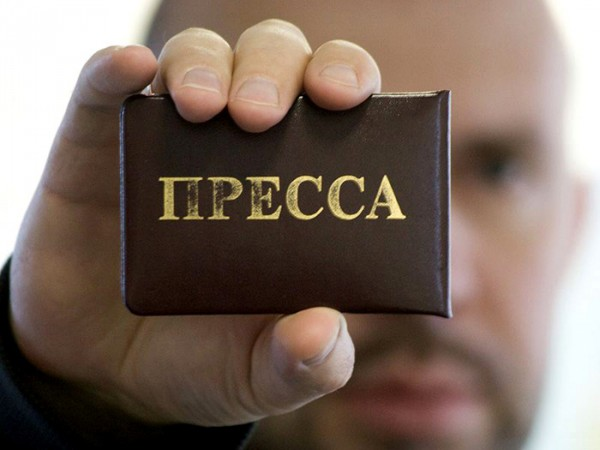

Сегодня в рамках формируемого в Кемерово «Медиаклуба», под руководством Михайлиной Гульсары, поприсутствовал на предварительной встрече журналистов и представителей пресс-служб.
В встрече приняли участие
- сама Гульсара (координатор и вдохновитель Медиаклуба)
- Борисова Юлия (пресс-служба, Федерации профсоюзных организаций Кузбасса)
- Павел Казаков («Аргументы и факты в Кузбассе»)
- Думенко Татьяна (газета «Кузбасс»)
- Евгений Демченко (департамент строительства Кемеровской области)
Целью встречи явилась подготовка к круглому столу «СМИ и пресс-службы: проблемы взаимодействия».
Функция пресс-служб, на мой взгляд, в сегодняшних реалиях заключается в следующем:
Формирование положительного имиджа в глазах потребителей. Ну может еще инвесторов, если пришла пора пускать пыль в глаза продавать компанию. Большинство пресс-служб считает, что для этого необходимо как можно чаще упоминать о расширении ассортимента, и расстраиваются, когда СМИ отказываются такую информацию публиковать (бесплатно).
По-настоящему информационные поводы формирует, к примеру, Сбербанк, занимаясь благотворительной деятельностью или «Подорожник», организовывая экскурсии на фабрику быстрого питания.
Слитие неудобных вопросов. Я сам ненастоящий журналист, но умные люди говорили и раньше и сегодня, что комментарий по событию, если это не новая модель обуви или не день рождения директора, получить порой бывает очень сложно. В особенности грешат этим государственные и олигархические структуры. Просто потому, что неудобных вопросов к ним возникает гораздо больше.
Попробуйте задать пресс-секретарю администрации района, почему главу района задержали в состоянии алкогольного опьянения? Не получается? Ну тогда поставьте себя на место пресс-секретаря. Пресс-службы в случае неудобных вопросов, а иногда и в случае «лень», «некогда», «журналист лицом не вышел», «да кто ты вообще такой» в лучшем случае будет прикрываться фразой «направляйте официальный запрос», выдернутой из закона о СМИ.

Средний читатель газет и телезритель может и не догадывается, но исходя из этих двух функций пресс-секретари и журналисты, даже будучи друзьями в жизни иногда вынуждены отстаивать совсем противоположные точки зрения.
Испытывают ли моральные муки специалисты пресс-служб кемеровский предприятий, когда умалчивают информацию от населения?
Плохо ли спят журналисты, которые в погоне за сенсацией и рублём бесплатно печатают только плохое?
По этим и другим вопросом, надеюсь у меня добавится ясности в конце апреля после «круглого» стола. Хотя уже сегодня соглашусь с Евгением Демченко, который заметил, «что если эти шесть человек собрались, это уже хорошо». Был рад свежим мнениям и новым знакомствам.